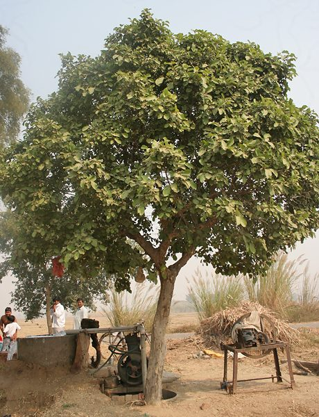

कैमKaim
Mitragyna parvifolia · Rubiaceae · FLR-0123

- Scientific nameवैज्ञानिक नाम
- Mitragyna parvifolia (Roxb.) Korth.
- Familyकुल
- Rubiaceae
- Hindiहिंदी
- कैम
- Local namesस्थानीय नाम
- kaim, kaem, keim, kaim kadamb, kadam
- Status hereयहाँ की स्थिति
- native
- Movementआवागमन
- Resident, here all year
- IUCNIUCN
- not evaluated
- Reviewसमीक्षा
- audited and independently read
When to look कब देखें
Present all year.साल भर मौजूद।
Uses and possibilities उपयोग और संभावनाएँ
Drawn from the documented uses in the profile below, where each is labelled traditional, current or a research lead. All uses →
Tell it apart from इनसे अलग पहचानें
कैम / Kaim
Mitragyna parvifolia (Roxb.) Korth. — Rubiaceae
कैम — नदी के किनारे की नमी में बड़ा होने वाला पेड़, जो गरमी में सब पत्ते झाड़ देता है। इसकी लकड़ी मजबूत और टिकाऊ होती है, और नाव, पुल और खुरली बनाने में काम आती है। अप्रैल-मई में इसके छोटे सफेद-पीले फूल गुच्छों में आते हैं। पेड़ की जड़ें मजबूत होती हैं जो बाढ़ के समय नदी की मिट्टी को पकड़े रहती हैं। पूर्वी उत्तर प्रदेश में यह आवश्यक पेड़ है।
Quick Identification त्वरित पहचान
| Feature | Description |
|---|---|
| Size | Medium deciduous tree, 10–18 m, with a spreading crown |
| Leaves | Simple, opposite, oblong to elliptic, 5–8 cm, entire margins, dull green |
| Flowers | Small, white to yellowish, in dense rounded clusters (balls) at branch tips, April to May |
| Fruits | Small, round, woody, 2-seeded capsules |
| Bark | Dark grey, rough, fissured |
| The test | Look for a tree with opposite simple leaves and small, round flower clusters along riverbanks |
Field tip: In April, look along the Ghaghra and Rapti for a medium tree shedding its leaves, with tight round clusters of tiny white-yellow flowers at the branch tips. In June, the trees are leafless; the dense flower clusters are the clue.
हिंदी — कैसे पहचानें: नदी के किनारे, गरमी में सब पत्ते झाड़ा हुआ, शाखाओं के सिरों पर गेंद जैसे सफेद-पीले फूलों के गुच्छे।
Morphology आकारिकी
Biometrics (riparian populations, northern India):
| Measurement | Range |
|---|---|
| Height | 10–18 m |
| Trunk diameter | 30–80 cm |
| Leaf length | 5–8 cm |
| Leaf width | 2.5–4 cm |
| Flower cluster diameter | 1–1.5 cm |
| Fruit diameter | 3–4 mm |
Trunk and bark: Straight to crooked, with dark grey, rough, deeply fissured bark. Wood light yellow, hard, moderately durable, used for boat building and agricultural implements.
Leaves: Simple, opposite, oblong to elliptic, tapering at base and apex, entire margins, dull green above, paler beneath, short petiole.
Flowers: Small, 4–5 mm, white or pale yellow, clustered in dense, round heads (capitula) at the branch tips; anthers exsert.
Fruits: Woody, 2-seeded capsules; fruiting is less prominent than flowering.
हिंदी: पत्तियाँ जोड़ों में, सपाट, भोथरी; फूल गेंद जैसे गुच्छों में; लकड़ी मजबूत, हल्की पीली।
Behaviour & Ecology व्यवहार और पारिस्थितिकी
A tree of riparian and seasonally wet forests, confined to areas with reliable soil moisture or periodic inundation. The root system is strong and deep, stabilising riverbanks against erosion and flood scour. The tree is largely deciduous, shedding leaves in the dry summer before flowering. It is not a major food source but is associated with riverine wildlife habitat.
The timber is moderately durable and has been used for centuries for boat building and water-related structures.
हिंदी: नदी के किनारे की नमी में ही रहता है। जड़ें बाढ़ की मिट्टी को पकड़े रहती हैं। नाव और पुल की लकड़ी।
Life Cycle / Phenology जीवन चक्र
| Month / season | Event |
|---|---|
| January–March | Leaf fall; bare tree |
| April–May | Flowering on bare or newly leafing branches |
| June–August | New leaves; fruit sets; monsoon growth |
| September–November | Fruit maturation; full canopy |
| Lifespan | Decades; flood-resistant |
हिंदी: गरमी में सब पत्ते, अप्रैल-मई में फूल, बरसात में पत्तियाँ।
Associated Species / Interactions संबंधित प्रजातियाँ
- Riparian companions: jhand, Babool, other riverbank species.
- Soil stabilisation: Associates with Doob Grass and other bank-stabilising plants.
Pests and Diseases कीट और रोग
- Minimal pest or disease problems in natural settings.
- Flood inundation is its natural habitat, not a stress.
Agricultural / Human Relevance कृषि प्रासंगिकता
Traditional and Ethnobotanical Use:
- Timber. Hard, moderately durable wood used for boats, bridges, agricultural implements (ploughs, irrigation wheels).
- Riverbank management. Deliberate planting for bank stabilisation in flood-prone areas.
Today. The tree is still valued for timber, though wild populations along the Ghaghra and Rapti are declining due to river management and habitat loss.
Research direction (a lead, not a result). Mitragyna parvifolia populations in eastern UP are under-surveyed; a population assessment along the major rivers would inform riparian restoration.
हिंदी: नदी की किनारे की मिट्टी को बचाता है। लकड़ी मजबूत, नाव-पुल के लिए। जंगली जनसंख्या घट रही है।
Expected Locally स्थानीय रूप से अपेक्षित
Not a field record. Written from published accounts for eastern Uttar Pradesh. No confirmed local sighting yet — if you have seen it, that is what the atlas needs.
अभी तक स्थानीय पुष्टि नहीं। यह विवरण प्रकाशित स्रोतों से है, किसी अवलोकन से नहीं।
To be expected along the Ghaghra and Rapti rivers in Basti and Ayodhya districts, especially in areas with seasonal flooding. Status depends on river management practices.
Distribution वितरण
Global range: India, Sri Lanka, and Myanmar; wild in tropical monsoon forests.
In India: Gangetic plain and the peninsula; riparian populations widespread.
In Uttar Pradesh: Scattered along major rivers.
In Basti district / eastern UP: Expected along the Ghaghra and Rapti; wild populations may be restricted.
Research Questions शोध प्रश्न
Anyone can investigate these | कोई भी इन प्रश्नों की जाँच कर सकता है
- How many kaim trees are left along the Ghaghra in your block? / आपके ब्लॉक के घाघरा के किनारे कितने कैम के पेड़ हैं? — Walk a 5 km stretch and count.
- When do the leaves fall, and when do they return? — Visit a tree monthly.
- Do the flower clusters open and close during the day? — Observe from dawn to dusk.
- Is any kaim timber still used locally? — Ask carpenters and boat builders.
- Do the trees survive the monsoon floods? — Visit after flood season.
Similar Species मिलती-जुलती प्रजातियाँ
| Species | How to tell apart | हिंदी |
|---|---|---|
| jhand (Prosopis cineraria) | Leaves compound, feathery; thorns on branches; seed pods long and flat | कटी-फटी पत्तियाँ, कांटे |
| Babool (Acacia nilotica) | Leaves compound; thorns paired; flower clusters yellow, less dense | पत्तियाँ कटी, पीले फूल |
| Bahera (Terminalia bellirica) | Leaves simple, opposite, but larger; fruit a dry drupe with wings | बड़ी पत्तियाँ, डैने वाली फली |
Field rule: A medium riparian tree, leafless in April, with dense round clusters of tiny white-yellow flowers and opposite simple leaves is kaim.
Taxonomy & Classification वर्गीकरण
Original description. Originally described by William Roxburgh as Nauclea parvifolia in Flora Indica (1820). Transferred to Mitragyna by Korthals in 1839. The epithet parvifolia means "small-leaved".
Subspecies. Monotypic — no subspecies are currently recognised.
Family and order placement. Rubiaceae (madder family), order Gentianales. Mitragyna is a small tropical genus of about 3 species.
Phylogenetic notes. Within Rubiaceae, Mitragyna is placed in the subfamily Naucleoideae, which also includes Cephalanthus and Nauclea, the other riverine genera.
IUCN status rationale. Not evaluated. Populations are declining in some areas.
Photo Gallery फोटो गैलरी
Photos needed आवश्यक फोटो
- [ ] Whole tree along a riverbank (पूरा पेड़)
- [ ] Flowering branch in April (अप्रैल में फूल)
- [ ] Bark close-up (छाल)
Atlas Connections संबंधित प्रजातियाँ
- Bahera — another timber tree; compare leaf size
- jhand — riparian companion; compare leaf compound versus simple
- Doob Grass — ground cover in riverine habitat
References संदर्भ
- Roxburgh, W. (1820). Flora Indica, vol. 2, p. 193 (as Nauclea parvifolia). Serampore. [original description]
- Korthals, J.B. (1839). Florae Javanica. Genus Mitragyna in Botanische Zeitung 37: 569.
- Hooker, J.D. (1873). The Flora of British India, vol. 3. L. Reeve, London. (Mitragyna)
- Duthie, J.F. (1903). Flora of the Upper Gangetic Plain and of the Adjacent Siwalik and Sub-Himalayan Tracts, vol. 1. Government Printing, Calcutta.
- Watt, G. (1889). A Dictionary of the Economic Products of India, vol. 5. Government Printing, Calcutta.
- GBIF Occurrence Data — Mitragyna parvifolia, India (2026).
Source file: species/flora/trees/kaim.md